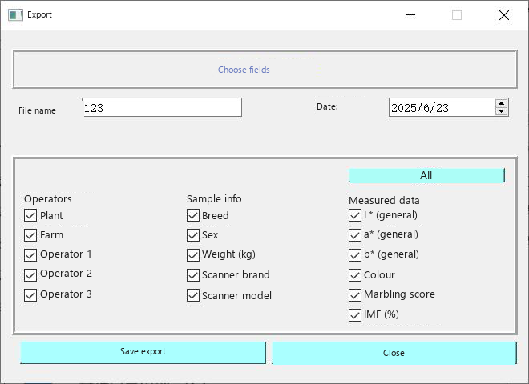
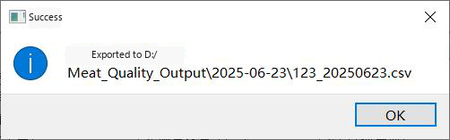
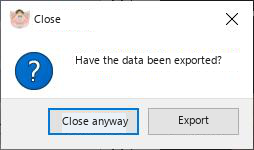

Export
Export writes only folders that have already been measured. In the animal list those folders are shown in red. Other folders are omitted.
|
 Use Menu File > Data export. The export window lists finished animals. Clear the tick in front of an animal if that animal should be left out of the file. Click Save export. |
The file is written to the folder chosen when the information template was saved. The default folder is D:\Meat_Quality_Output. If that folder does not exist, MMQ creates it on drive D:.

Fig. 37. Confirmation after the CSV file has been written.
|
 If you close the program without exporting, or you hit the close button by mistake, MMQ asks you to export before it quits (Fig. 38). |
Fig. 39. Default export location on drive D:.

Fig. 40. Opened CSV file.
Columns
- Column 1 is the animal ID typed in the information table (the ear-tag column in the manual).
- Column 2 is the image number.
- Further columns hold the image record and the measured values.
- A remark distinguishes a 45min sample from a 24h sample.
- The colour-score column notes which scoring model was used.
- The last row is the average of the accepted images.
- An image that was not accepted is marked and is not part of that average.
Menu Help > User guide opens the packaged guide, the same document as the PDF manual shipped with the program.